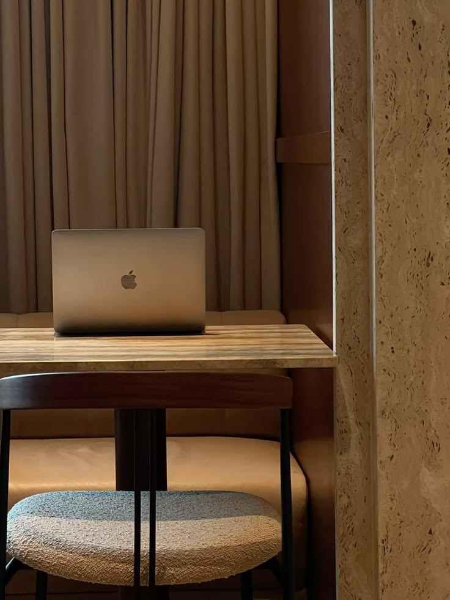

(01)
Experience
Selected roles and projects across fintech, AI and SaaS.
- 2026 — PresentLead Product Designer, RenncoraAI · Creator platform
- 2024 — PresentProduct Designer, BroadMoney PaymentFintech · Remittance
- 2026Product Designer, DoxflowyB2B SaaS
- 2026Product Designer, Kunchi MFBDigital banking
- 2025 — 2026UI/UX Designer, Wosi WosiFintech · Remittance
- 2025Product Designer, Help2PayPayments
- 2026Product Designer, Tax ClarityCivic tech
- 2025Product Designer, Stack LayerAI · Web
